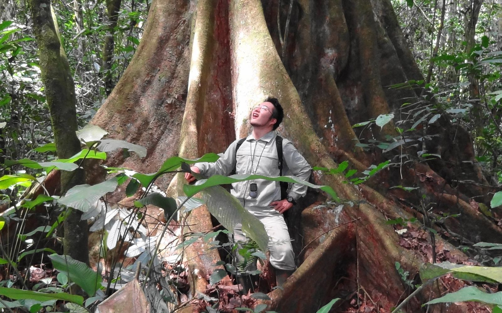
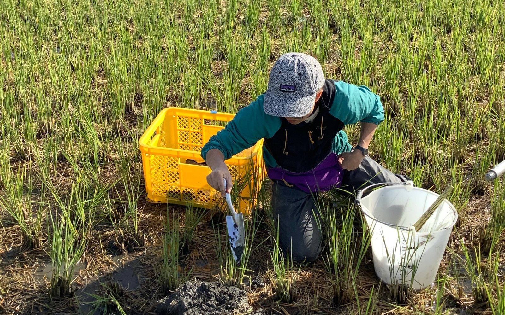
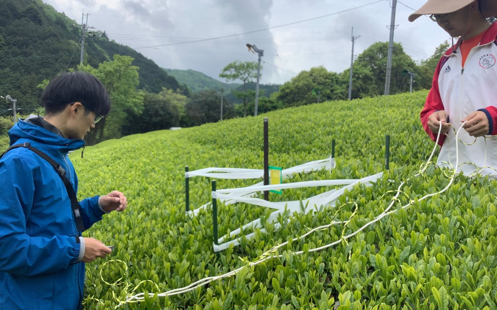
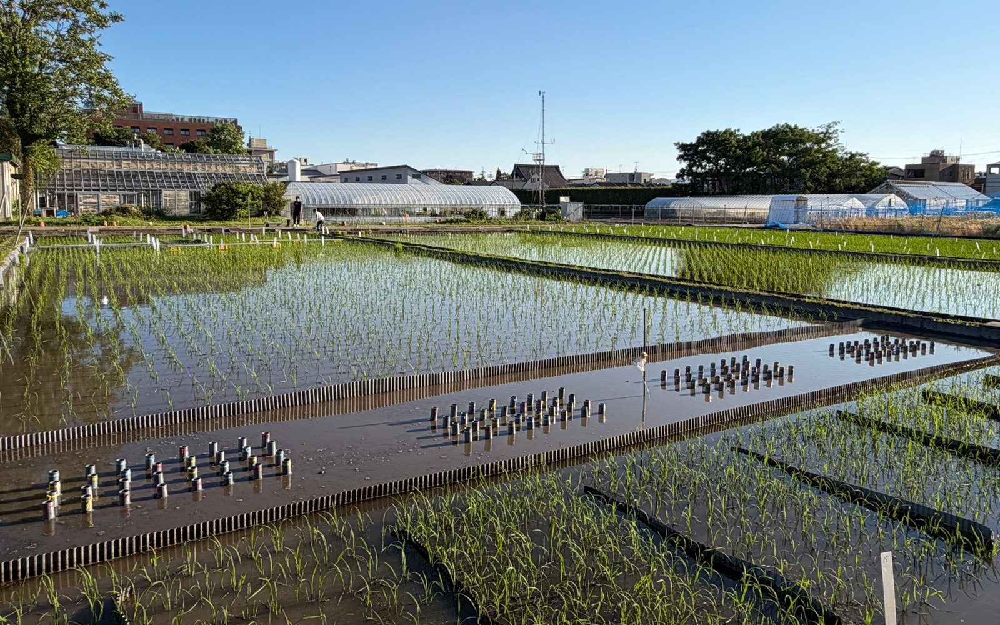
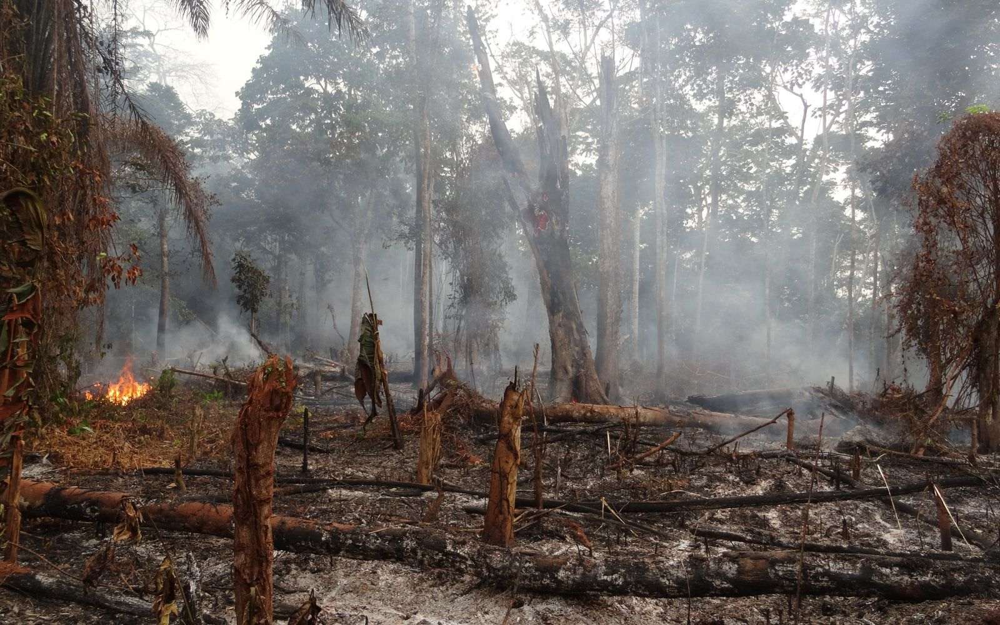
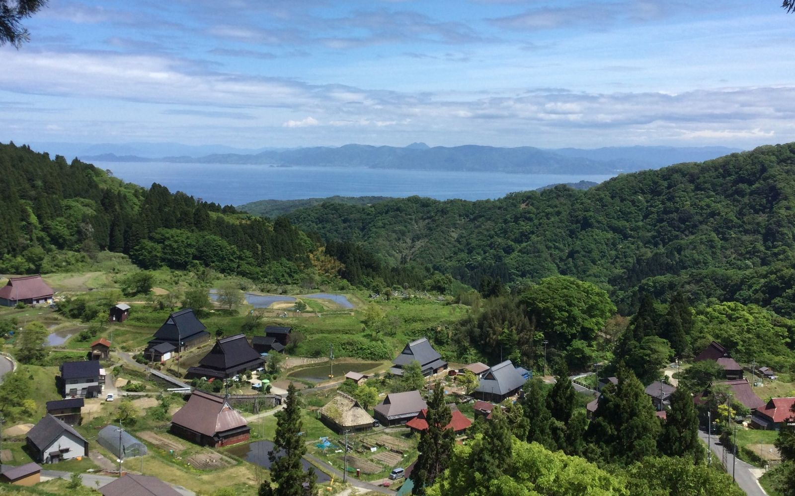

カメルーン東部の熱帯林で
カメルーンベトナム
熱帯林の土は、
本当に貧しいのか
赤く強く風化した熱帯の土（オキシソル／フェラルソル）は「やせた土」と言われてきました。では、その上に茂る生育旺盛な熱帯林は、窒素やリンをどう手に入れ、どう使い回しているのか。森の土の養分の動きを追いかけています。
関連：Shibata et al. (2017) Soil Sci. Plant Nutr.／科研費 若手研究「熱帯強風化土壌の肥沃度再考ーオキシソル土壌は貧しいのか？」（2019–2021年度、代表）

新潟県胎内市の水田で
新潟ほか国内各地フィリピン
田んぼの土を測って、
おコメの品質を守る
夏の高温で、おコメの品質低下が問題になっています。水田土壌のケイ酸などの肥沃度と、籾の品質との関係を生産者の田んぼで調べています。カントリーエレベーターに集まる情報を使って、地域ごとに土の状態を評価する仕組みづくりも始めました。
共同研究：新潟食料農業大学 伊藤豊彰先生
関連：柴田ら (2025) ペドロジスト／科研費 基盤研究(B)「カントリーエレベーターを活用した地域分散型水田肥沃度評価システムの開発」（2026–2028年度、代表）

無施肥茶園の調査区、近畿
近畿中山間地
肥料に頼りすぎず、
在来資源を活かす農業
何十年も肥料を入れていない茶園や田んぼがあります。なぜ作物が育ち続けるのか。土の中の炭素と窒素の収支を、慣行栽培や有機栽培と比べながら測っています。肥料に頼りすぎず、その土地にある資源を活かす農業の手がかりを、そこから探しています。
共同研究：京都大学 作物学研究室（桂圭佑先生）
関連：科研費 基盤研究(B)「無投入水田における収量安定性の機構解明」（2026–2028年度、分担）

学内圃場の水田。イネの残渣を入れた筒を並べて
カメルーンベトナムタイ日本
炭素や窒素は、
土のどこに留まり、
どう動くのか
落ち葉や根、刈り取ったあとの稲わら。土に入った有機物は、どこに、どれくらいの時間とどまるのか。熱帯の森や畑の土から、日本の森林や水田の土まで、有機物を画分ごとに分けて炭素と窒素を測り、硝化などの窒素の変化を追っています。13C・15Nで印をつけたイネの残渣を土に入れて、その行き先をたどる実験も進めています。
共同研究：東京農工大学 杉原創先生
関連：Wang et al. (2026) Forest Ecosystems／Wang et al. (2026) CATENA／科研費 基盤研究(B)「粘土鉱物組成を考慮した土壌有機炭素蓄積モデルの構築」（2026–2028年度、分担）

焼畑の火入れ直後、カメルーン
カメルーンタイタンザニア
森や草原を開墾すると、
土の中で何が起きるか
熱帯では、森林やサバンナが急速に農地へ変わっています。開墾したあとの畑では、養分はどこへどれだけ失われるのか。土が同じタイプでも、元の植生が森林だったかサバンナだったかによって失われ方が違ってくることが分かってきました。また、焼畑の休閑期間は土の養分をどう回復させるのか、ところ違えば休閑の生態学的意義も異なるのか、現地の畑で測っています。
関連：Shibata et al. (2018) Agric. Ecosyst. Environ.／Shibata et al. (2023) Geoderma Regional

丹後半島の里山、京都府
京都府 宮津長野県 安曇野
土地と、人の暮らしが
続いてきた仕組み
丹後の藤織りは、山でフジを採ることから始まります。天蚕（やままゆ）を育てるにも、里山の木がいります。布や糸の材料は、その土地の地形や気候、土と、人の手入れがそろって初めて手に入るもの。そうした土地と暮らしのつながりが、どう受け継がれ、どう変わってきたのか。文化人類学や工芸の研究者と一緒に、フジや天蚕を手がかりに調べています。
共同研究：国際ファッション専門職大学 金谷美和先生
関連：Kanetani & Shibata (2025) J. Textile Design Res. Pract.／科研費 基盤研究(A)「『在来マテリアル』の復興と変容の解明：繊維製品原料の多様化社会にむけた学際的研究」（2026–2030年度、分担）